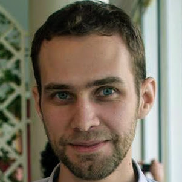
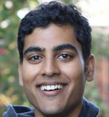

Owain Evans
Research Scientist in Artificial Intelligence
I'm a research scientist working on AI Safety. I'm a research associate at the Future of Humanity Institute (directed by Nick Bostrom). My PhD is from MIT, where I worked on cognitive science, AI, and philosophy. I was previously a research scientist at the non-profit Ought, where I still serve on the Board of Directors.
My name is pronounced "O-wine".
CV (pdf) | Email | Google Scholar | LinkedIn | Facebook
Research
Modelling the health and economic impacts of population-wide testing, contact tracing and isolation (PTTI) strategies for Covid-19
Colbourn T. et al. (2020)
SSRN Preprint
Estimating Household Transmission of SARS-CoV-2
Curmei M., Ilyas A., Evans O., Steinhardt J. (2020)
Medrxiv Preprint
Evaluating arguments one step at a time
Saunders, W., Rachbach, B., Evans, O., Miller, Z., Byun, J., Stuhlmüller A. (2020)
Ought.org Technical report
Sensory Optimization: Neural Networks as a Model for Understanding and Creating Art
Evans, O. (2019)
Arxiv
(PDF version)
Generalizing from a few environments in safety-critical reinforcement learning
Kenton Z., Filos A., Evans O., Gal Y. (2019)
ICLR 2019 (Safe ML Workshop)
Machine Learning Projects for Iterated Distillation and Amplification
Evans O., Saunders W., Stuhlmüller A. (2019)
FHI Technical Report
Predicting Human Deliberative Judgments with Machine Learning
Evans O., Stuhlmüller A., Cundy C., Carey R., Kenton, Z., McGrath T., Schreiber A. (2018)
FHI Technical Report
Active Reinforcement Learning with Monte-Carlo Tree Search
Schulze S., Evans O. (2018)
Arxiv
The Malicious Use of Artificial Intelligence: Forecasting, Prevention, and Mitigation
Brundage M., Avin S., Clark J., et al. (2018)
Arxiv
Trial without Error: Towards Safe Reinforcement Learning via Human Intervention
Saunders S., Sastry G., Stuhlmüller A., Evans O. (2017)
AAMAS 2018
(Blogpost, Atari Videos,
Slides)
When Will AI Exceed Human Performance? Evidence from AI Experts.
Grace K., Salvatier J., Zhang B., Dafoe A., Evans O. (2017)
Journal of AI Research (JAIR) 2018.
(Covered by
BBC News,
New Scientist, Newsweek, and more)
Model Mis-specification and Inverse Reinforcement Learning.
(Essay co-authored with Jacob Steinhardt, 2017).
Agentmodels.org: Modeling Agents with Probabilistic Programs.
Evans O., Stuhlmüller A., Salvatier J., Filan D. (2017)
Online Book and Open-source Library
Agent-Agnostic Human-in-the-Loop Reinforcement Learning.
Abel D., Salvatier J., Stuhlmüller A., Evans O. (2016)
NIPS Workshop
Active Reinforcement Learning: Observing Rewards at a Cost.
Krueger D., Leike J, Salvatier J., Evans O. (2016)
NIPS Workshop
Learning the Preferences of Ignorant, Inconsistent Agents.
Evans O., Stuhlmüller A., Goodman N. (2016)
AAAI
Learning the Preferences of Bounded Agents.
Evans O., Stuhlmüller A., Goodman N. (2015)
NIPS Workshop
Learning Structured Preferences.
Evans O., Bergen L., Tenenbaum J. (2012)
Proceedings of Cognitive Science Society Conference
Help or hinder: Bayesian models of social goal inference.
Ullman T., Baker C., Macindoe O., Evans O., Goodman N., & Tenenbaum J. (2010)
NIPS
Bayesian Computational Models for Inferring Preferences (2015)
MIT Dissertation
Talks
Predicting Slow Judgment
(Slides for talk at "Aligning AI" workshop at NIPS 2017 in Long Beach.)
Trial without Error: Towards Safe Reinforcement Learning via Human Intervention
(Slides for talks at Cambridge Centre for the Future of Intelligence and Google Deepmind)
Automated Corporations and AI Risk
(Informal talk at Oxford University)
Agent-agnostic Human-in-the-loop Reinforcement Learning
(Slides for talks at U. Toronto and Deepmind)
Learning the Preferences of Ignorant, Inconsistent Agents
(Slides for oral presentation at AAAI 2016)
Learning Human Preferences
(Short talk at MIT)
Recent Collaborators
|

Andreas Stuhlmüller |
John Salvatier |
Katja Grace |
|
Jan Leike |
David Abel |
David Krueger |
|
Allan Dafoe |
Vlad Firoiu |
William Saunders |
|
Baobao Zhang |

Girish Sastry |
Adapted from Matei Zaharia and Andreas Viklund.